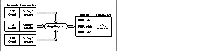

SYNTAX
MergeFragment [pefFile[,pefFile]…] targetFile [-a] [-c] [-d] DESCRIPTION There are two ways to use the MergeFragment tool. The most common way is to merge several PEF files into one file. The tool concatenates the data forks of each file and merges the 'cfrg' resources together into a single resource, as shown in the figure below, using the last filename that appears on the command line as the target file.  MergeFragment merges a code fragment into the target PEF file only if its name, version, or architecture type differ from an existing PEF code fragment, as indicated by the 'cfrg' resource. The target file might contain a code fragment, which is preserved by MergeFragment. MergeFragment can also create a 'cfrg' resource for a PEF file that does not have one if the file contains one code fragment. The default values in this resource are kIsLib for its usage, kPowerPCArch for its architecture, and a fragment name that is the same as the filename unless you set it to some other name with the -n option. INPUT Any number of PEF files. MergeFragment does not accept standard input. OUTPUT A single PEF file. If you specify multiple input files on the command line, the output file contains all code fragments, along with an entry for each fragment in the 'cfrg' resource. STATUS
MergeFragment
can return the following status codes:
PARAMETERS pefFile[,pefFile]… One or more PEF files, possibly containing 'cfrg' resources. If more than one file is specified, the 'cfrg' resources from those files are merged and the contents of the each file's data fork are appended to targetFile. targetFile A file to which the new 'cfrg' resource is written and to which the contents of the data forks of the other PEF files are appended. No other resources besides the 'cfrg' resource are included in the target file. The target file is created automatically if it does not already exist. OPTIONS -a Sets the usage type of the code fragment to application (kIsApp). The default is library (kIsLib). -c Creates a default 'cfrg' resource if targetFile does not contain one.
Note -d Specifies that the data fork of targetFile does not contain a code fragment. -n fragName Sets the name of the code fragment when creating a default 'cfrg'. -p Displays progress information. -r Specifies that the 'cfrg' resource entry is for a CFM-68K code fragment ('rseg' resource). -t pwpc | m68k Defines the architecture for the created 'cfrg' entry, either the PowerPC (pwpc) or CFM-68K (m68k) runtime architecture. -u Sets 'cfrg' update level to update library (kUpdateLib). -x Deletes any existing 'cfrg' resource in the target file. -z Truncates the data fork of the target file before merging. EXAMPLES If you have two import libraries and you want to merge them into a single file without creating a new file, use the following command: MergeFragment myImportLib1 myImportLib2 where myImportLib2 is the target file. To create a fat application that contains both a PowerPC and 68K version of the application, use the following command MergeFragment myApp.PPC myApp.68K where myApp.PPC is the PowerPC version and MyApp.68K is the 68K version. LIMITATIONS MergeFragment does not verify that the input file contains a valid PEF container. SEE ALSO
|